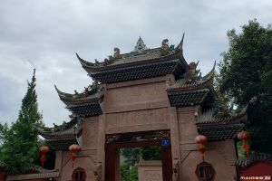

都江堰
都江堰是全世界迄今为止，年代最久、仍在一直使用、以无坝引水为特征的宏大水利工程，凝聚着中国古代劳动人民勤劳、勇敢、智慧的结晶。

青城山
青城山是中国四大道教名山之一、中国道教发祥地之一， 因其的秀丽的自然风光和众多道教建筑而成为天下名山，与剑门之险、峨眉之秀、夔门之雄合称为“蜀中四秀”，有“青城天下幽”之美誉。
武侯祠
成都武侯祠博物馆位于成都市武侯区武侯祠大街231号， 是中国一座君臣合祀祠庙和较负盛名的诸葛亮、刘备及蜀汉英雄纪念地，也是全世界影响较大的三国遗迹博物馆，享有“三国圣地”之美誉。
杜甫草堂
成都杜甫草堂博物馆位于四川省成都市青羊区青华路37号，成立于1955年，是中国唐代大诗人杜甫流寓成都时的故居， 是中国规模较大、保存较为完好、知名度较高且较具特色的杜甫行踪遗迹地，也是全国重点文物保护单位、国家一级博物馆、全国古籍重点保护单位。